Настройка Tenda
Настройка режима ретранслятора Wi-Fi сети на роутере Tenda
Настройки главного маршрутизатора (к которому будем подключаться) мы вообще не трогаем.
Режим повторителя (репитер, мост WDS) на роутере Tenda.
Сразу открываем раздел "Настройки WiFi" – "Wi-Fi ретрансляция".
;
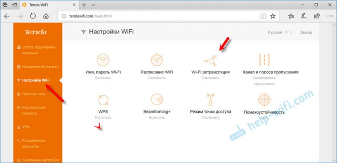
Включаем функцию ретранслятора. Из списка выбираем свою Wi-Fi сеть. В поле "Пароль беспроводной сети..."
Вводим пароль от этой сети. Там есть еще два варианта работы: "WISP" и "Клиент+AP". Я настраивал в WISP, все работало.
Если у вас будут проблемы, то попробуйте в другом режиме. Или сразу ставьте "Клиент+AP".
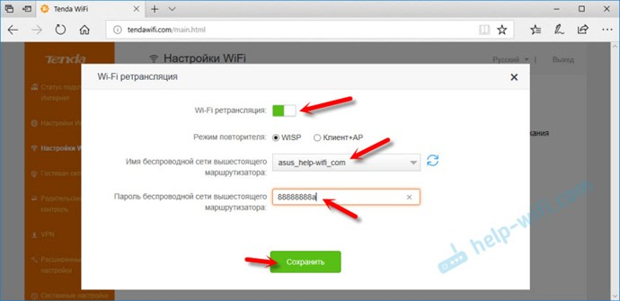
Роутер сохранит все настройки, перезагрузиться, и подключится к нашей Wi-Fi сети.;
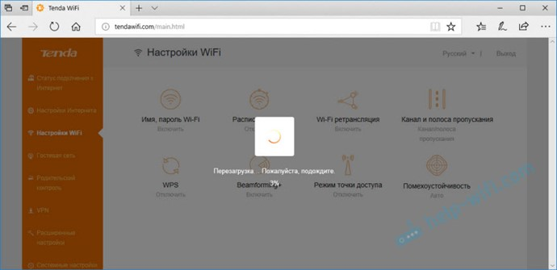
И если снова зайти в панель управления, то мы увидим, что наш роутер подключен к другому "вышестоящему" роутеру.
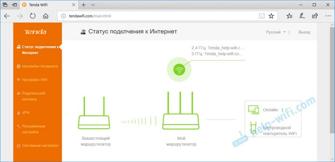
Все работает. Проверено! Второй вариант настройки (другая панель управления) После обновления прошивки Tenda N301, панель управления была на английском языке. Но и там все просто и понятно. В разделе "Wireless Repeating" выбираем режим "Universal Repeater", затем из списка доступных выбираем свою сеть и вводим пароль к ней в поле "WiFi Password". Нажимаем "Ok".
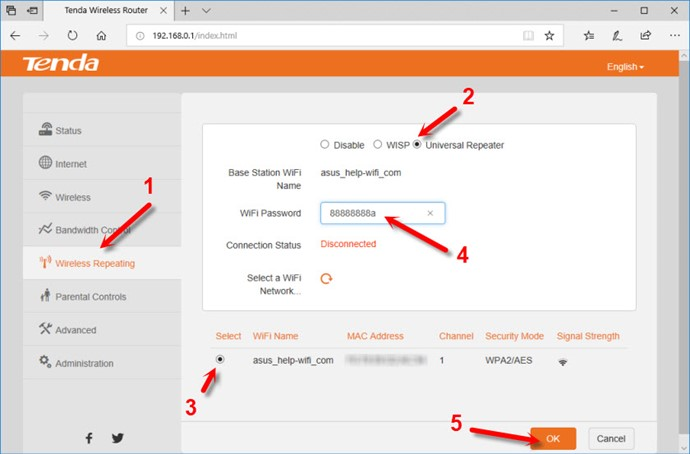
Роутер будет перезагружен и начнет работать в режиме повторителя
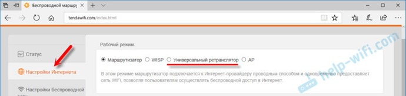
Настройка TP-Link
Настройка моста (WDS) на роутере Tp-Link
Для начала, нам нужно сменить IP-адрес нашего Tp-Link. Это нужно для того, что бы в сети не было двух устройств с одинаковыми IP. Например, если у главного IP-адрес 192.168.1.1, и у второго - 192.168.1.1, то получится конфликт адресов. Перейдите на вкладку Network - LAN. В поле IP Address замените последнюю цифру с 1 на 2. У вас получится адрес 192.168.1.2, или 192.168.0.2. Нажмите кнопку Save. Роутер перезагрузится.
Нужно знать, какой IP адрес у главного роутера, к которому мы собрались подключатся. Если у него 192.168.1.1, то на роутере, который хотим подключить по WDS меняем адрес на 192.168.1.2. А если у главного адрес 192.168.0.1, то второму задаем 192.168.0.2. Важно, чтобы они были в одной подсети.
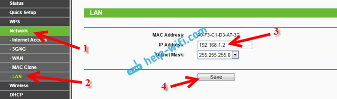
Снова зайдите в настройки, только IP-адрес будет уже другой - 192.168.1.2. Который мы указали выше.
Перейдите на вкладку Wireless. В поле Wireless Network Name можете указать имя второй беспроводной сети. Дальше, установите галочку возле Enable WDS Bridging. И нажмите на кнопку Survey.
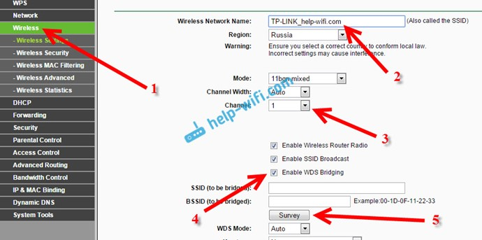
Выберите из списка нужную сеть, с которой роутер будет получать интернет. Напротив нужной сети нажмите на ссылку "Connect".
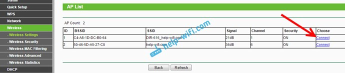
4Нам осталось только напротив выпадающего меню Key type выбрать тип безопасности вашей сети (к которой мы подключаемся). И в поле Password указать пароль к этой сети. Для сохранения, нажмите на кнопку Save.
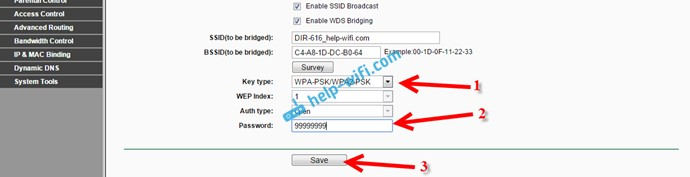
Перезагрузите роутер. 5После перезагрузки, снова заходим в настройки. И прямо на главном экране (вкладка Status), смотрим раздел Wireless. Напротив WDS Status должно быть написано Run.
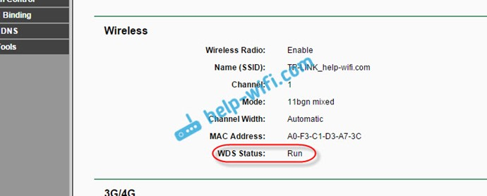
Настройка беспроводного моста (2,4 ГГц и 5 ГГц) на новой версии прошивки
Если у вас маршрутизатор с новой панелью управления, то необходимо перейти в раздел "Дополнительные настройки" – "Системные инструменты" – "Параметры системы". Если у вас роутер двухдиапазонный, то там вы увидите возможность настроить режим моста в двух диапазонах. На частоте 2,4 GHz и 5 GHz.
Установите галочку "Включить мост WDS" возле необходимой частоты. Я, например, поставил галочку возле 2,4 ГГц. Нажмите на кнопку "Поиск"
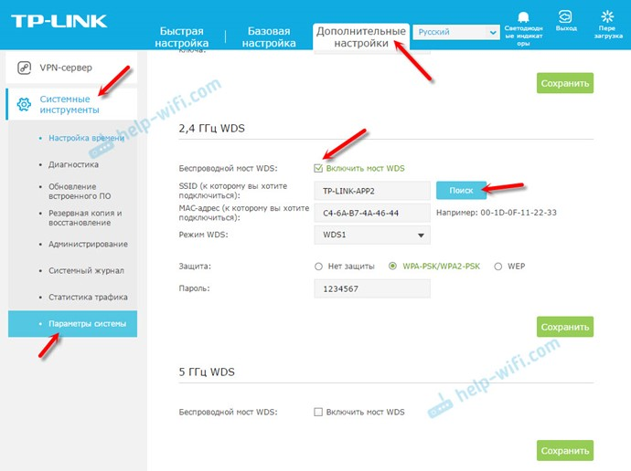
Выберите из списка сеть, к которой вы хотите подключится. Просто нажмите "Выбрать" напротив своей сети. Думаю, вы без проблем найдете свою сеть в списке доступных.
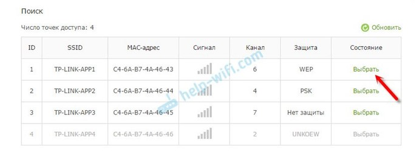
Если необходимо, можете сменить настройки защиты (Защита, Пароль) и нажмите на кнопку "Сохранить". Если будете ставить пароль, то выбирайте "WPA-PSK/WPA2-PSK". Так же сеть можно оставить без пароля. Если это необходимо.
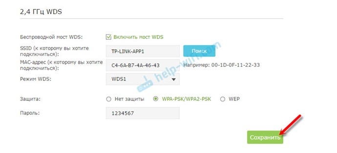
Настройка Xiaomi
Настройка роутера Xiaomi
Соглашаемся и жмем большую синюю кнопку
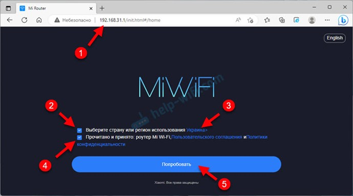
Нажмите на "Продолжить настройку без подключения сетевого кабеля". Подключать кабель (интернет) в WAN-порт роутера не нужно. Роутер Xiaomi будет подключаться кглавному роутеру по Wi-Fi.
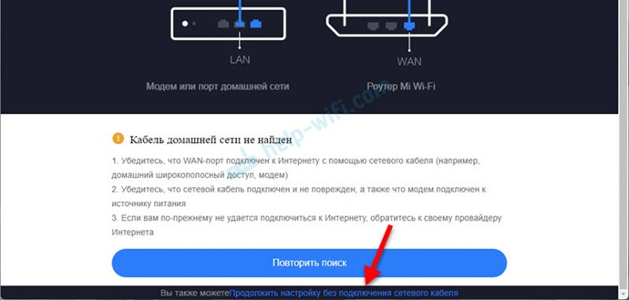
3. Выбираем пункт "Точка доступа Wi-Fi" и нажимаем Далее.
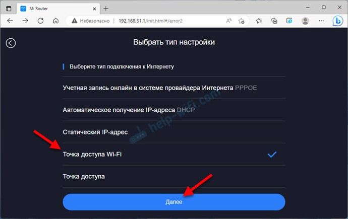
4. Дальше появится список сетей, которые можно расширить. Нужно выбрать Wi-Fi сеть, к которой мы хотим подключить наш роутер в режиме усилителя Wi-Fi сигнала. Подключаться можно к сетям в диапазоне 2.4 ГГц и 5ГГц.
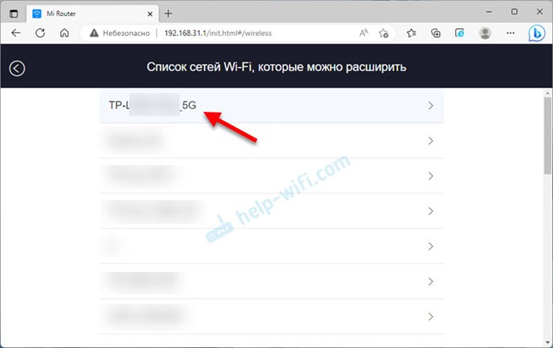
5. Нужно указать пароль от этой Wi-Fi сети. Обязательно убедитесь, что вы правильно указали пароль от основной Wi-Fi сети. Иначе роутер просто не сможет к ней подключиться.
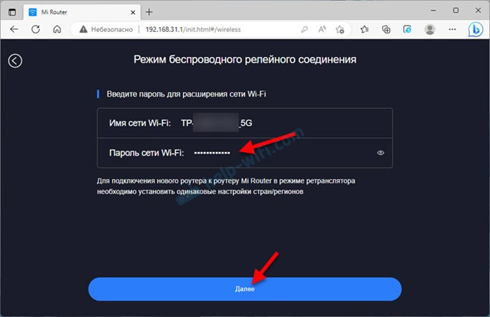
6. В следующем окне можно задать настройки Wi-Fi сети, которую будет раздавать роутер в режиме усилителя сигнала. По умолчанию к названию основной сети добавляется "_plus". Вы можете сменить имя сети. Например, сделать его таким же, как на основном роутере. Так же нужно указать пароль для Wi-Fi сети, которую будет транслировать репитер. Я рекомендую установить такой же пароль, как у основной сети. Этот же пароль будет установлен в качестве пароля администратора роутера. Если вы хотите установить другой пароль, чтобы он отличался от пароля Wi-Fi сети, то уберите галочку (первая, под полем ввода пароля) и укажите другой пароль, который будет защищать настройки роутера.
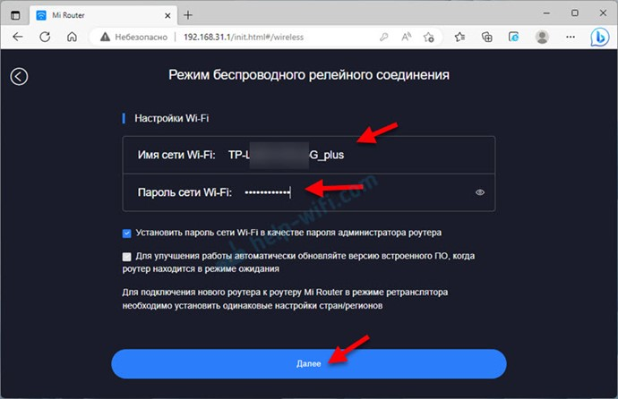
Появится окно с информацией о Wi-Fi сети и пароле. Там же будет указан установленный пароль администратора роутера. Нужно заново подключиться к Wi-Fi сети
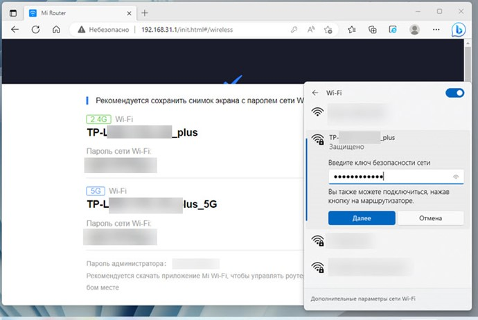
Настройка Mi WiFi Router в качестве усилителя Wi-Fi через веб-интерфейс
Перейдите в раздел Settings – Network Settings.
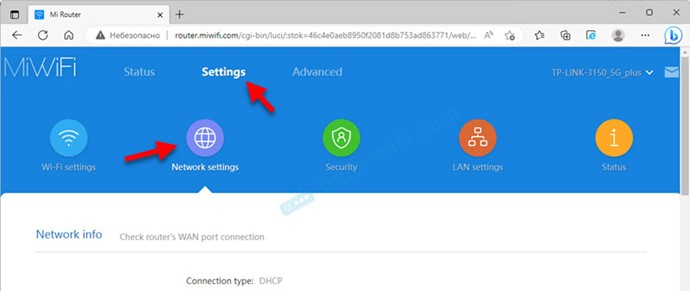
Внизу страницы нажмите на кнопку "Switch" (последняя кнопка на этой странице). Выберите режим "Wireless repeater mode" и нажмите "Next". Подтвердите нажав на кнопку OK.
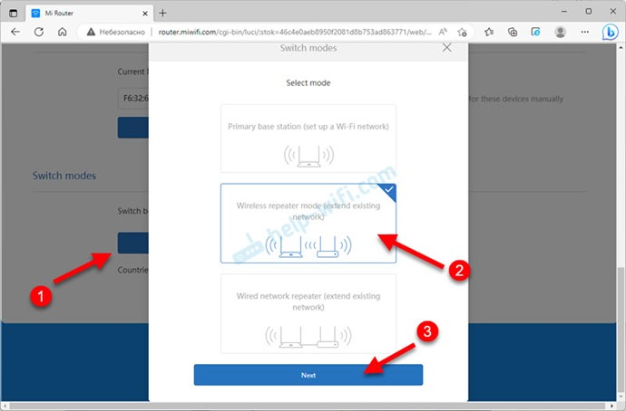
Дальше нужно в выпадающем меню выбрать Wi-Fi сеть, которую необходимо усилить и ввести пароль от этой сети. После чего нажать на кнопку "Wireless Repeater".
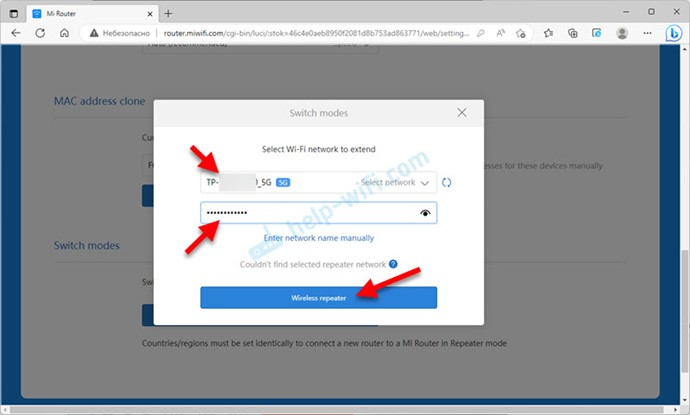
Появится информация о Wi-Fi сети (имя сети, которую будет раздавать репитер). Пароль, я так понимаю, устанавливается такой же, как и у основной сети. Там же будет указан IP-адрес, по которому можно зайти в настройки роутера-реиптера
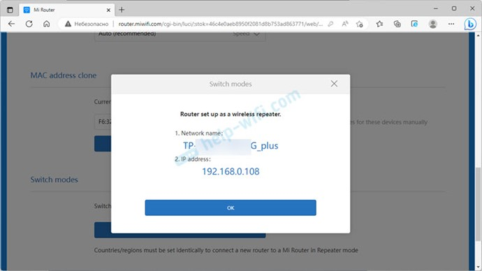
Настройка роутера Huawei
Примите соглашение, включите авто-обновление роутера и нажмите «Начать»
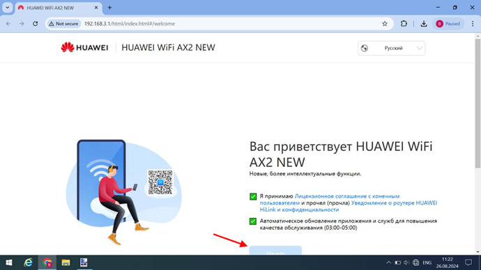
Выберите «создать сеть Wi-Fi» и нажмите «Далее»
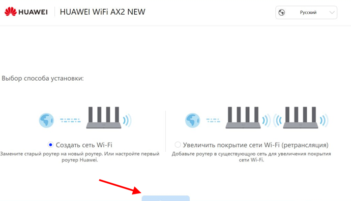
3. После недолгих раздумий роутер поймет, где у него интернет, нужно убедиться, что выбрано DHCP без дополнительных настроек,
и нажать «далее»
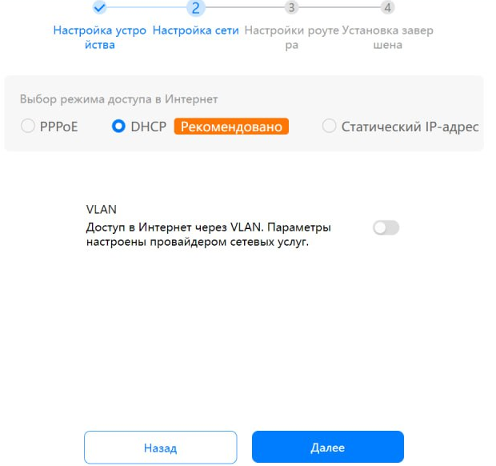
4. Настройте параметры — имя Wi-Fi сети, пароль от неё и пароль от роутера для доступа к настройкам и нажмите «далее»
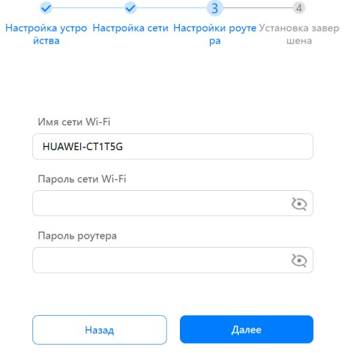
5.Пункт «Резервная сеть Wi-Fi 5» пригодится при наличии старых устройств, которые плохо совместимы с Wi-Fi 6. «Режим доступа в WAN» оставляем IPv4. Нажимаем «далее»
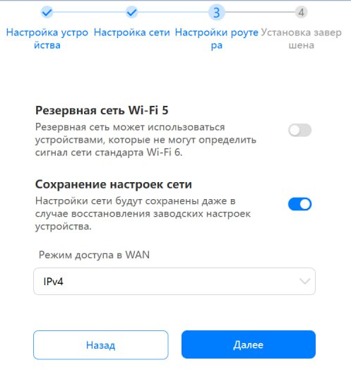
6.Настройка завершена, после перезапуска сети заработает и проводной интернет и Wi-Fi. Когда кнопка станет доступна, нажимте «далее»
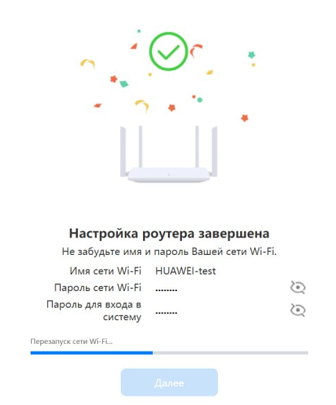
Настройка роутера Mercusys
Подключаем главный роутер к Интернету. Затем в его веб-интерфейсе проверяем наличие пункта "Mesh Wi-Fi – система" в разделе
"Мои сети и Wi-Fi"
Настройка роутера Keenetic
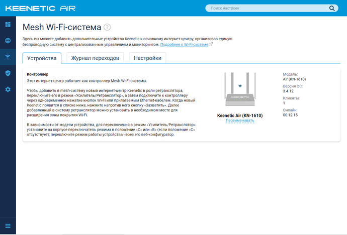
На дополнительном роутере включаем режим ретранслятора. Т.к. в данном случае рассматривается модель City, то смена режима производится в веб-интерфейсе роутера
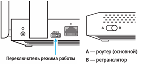
3. В случае, если отсутствует переключатель режима работы, то данную операцию можно провести в веб-интерфейсе устройства
на странице «Общие настройки» в разделе «режим работы интернет-центра».
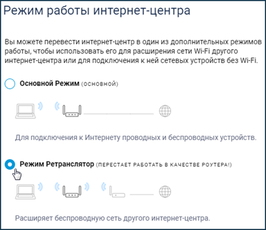
4. Откройте веб-интерфейс основного роутера, перейдите на страницу «Wi-Fi – система» нажмите кнопку захватить, чтобы добавить ретранслятор
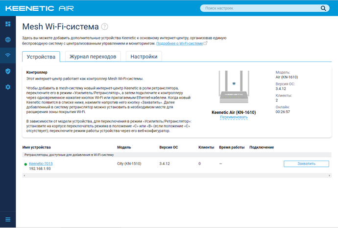
5.В момент захвата может произойти обновление операционной системы ретранслятора. Дождитесь завершения процесса
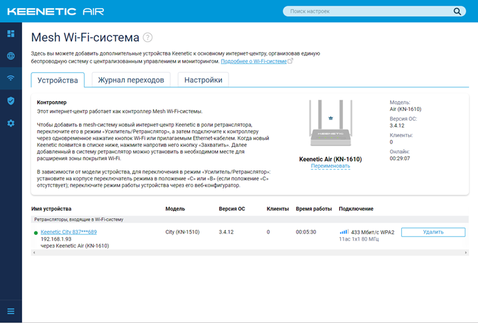
Отсоедините ретранслятор от главного роутера и перенесите его в нужное место в вашем доме, чтобы увеличить покрытие сети Wi-Fi. Индикатор (Интернет) на ретрансляторе будет непрерывно гореть при успешном подключении ретранслятора к единой беспроводной сети. 4. Подключение через WPS На ретрансляторе выполните однократное нажатие кнопки (Wi-Fi) для запуска быстрого подключения по WPS к беспроводной сети главного роутера. Важно! Кратковременно нажмите кнопку Wi-Fi и отпустите. Не удерживайте ее нажатой. (Wi-Fi) на главном роутере. После успешной установки подключения на ретрансляторе загорится непрерывно индикатор (Интернет).
Настройка роутера D-Link
Для начала, подключаемся к нашему D-Link по кабелю, и заходим в настройки по адресу 192.168.0.1. Переходим сразу на вкладку Wi-Fi - Клиент. Ставим галочку возле Включить, в списке сетей выбираем свою сеть (главного роутера), в поле WPA-шифрование укажите пароль от вашей сети и нажмите на кнопку Применить. А если появится еще сообщение о смене канала, то нажмите Ok.
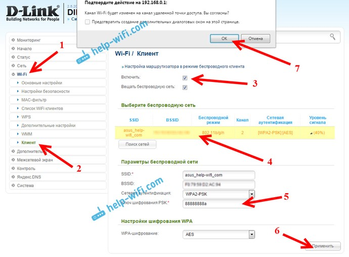
Дальше перейдите на вкладку Сеть - WAN. Выделите галочками все профили, которые там есть, и нажмите на кнопку Удалить.
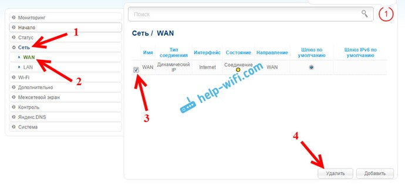
3. Затем, нажмите на кнопку Добавить, выберите в списке Динамический IP. В поле Интерфейс выберите пункт WiFiClient,
и нажмите на кнопку Применить
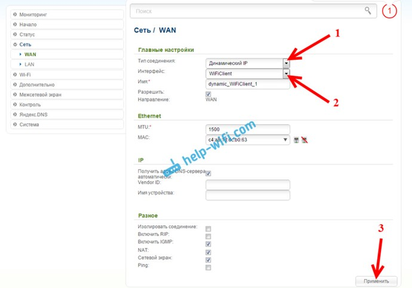
4.После этого нужно сохранить настройки нажав на пункт Система, и выбрав Сохранить. Затем снова наведите мышку на пункт Система и выберите Перезагрузить
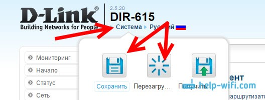
Настройка роутера Zyxell
Сменить подсеть на Zyxel Keenetic, который у нас будет в роли клиента. В панели управления перейдите на вкладку Домашняя сеть (снизу), и сверху откройте вкладку Сегменты. Выберите Home network.
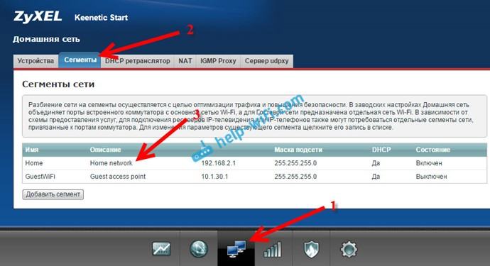
Смените подсеть, как у меня на скриншоте ниже (просто замените цифру 1 на 2), и нажмите кнопку Применить.
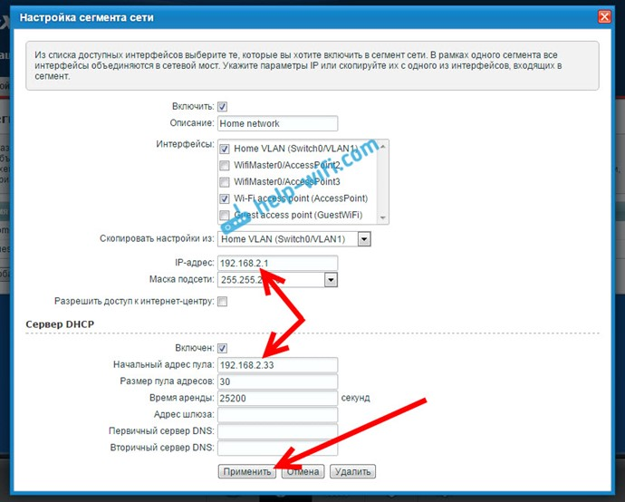
3. откройте настройки набрав уже новый адрес 192.168.2.1. Для настройки подключения к интернету по Wi-Fi (WISP) перейдите снизу на вкладку
Интернет, а сверху откройте вкладку WISP, или Wi-Fi (в зависимости от прошивки). Установите галочку возле Включить.
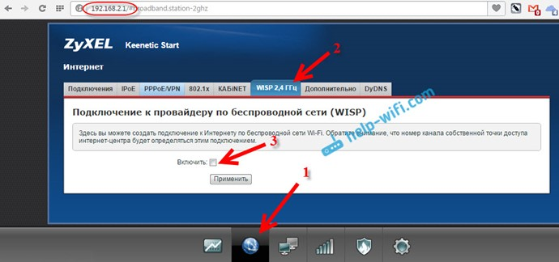
4. Дальше, нажимаем на кнопку Обзор сетей, и выбираем из списка сеть, к которой будем подключатся. Или, укажите имя сети вручную
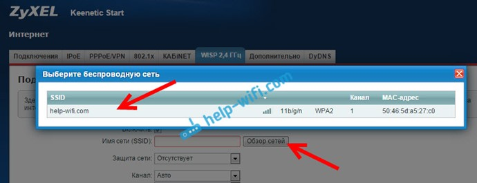
5.Теперь, нам нужно в поле Ключ сети, указать пароль к той сети, которую мы выбрали. Если выбранная нами сеть защищена паролем. Ставим галочку возле Использовать для выхода в интернет, и нажимаем на кнопку Применить
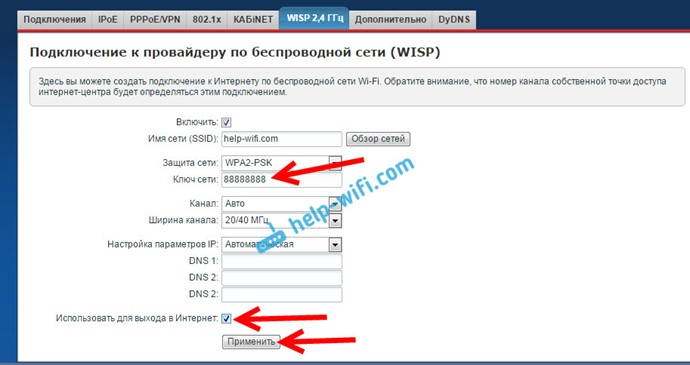
Если все сделали правильно, то роутер подключится к интернету, и будет раздавать интернет. Перейдите на главный экран настроек. На вкладке Действующее подключение к Интернету вы увидите созданное нами подключение. Там будет отображаться вся информация по нему
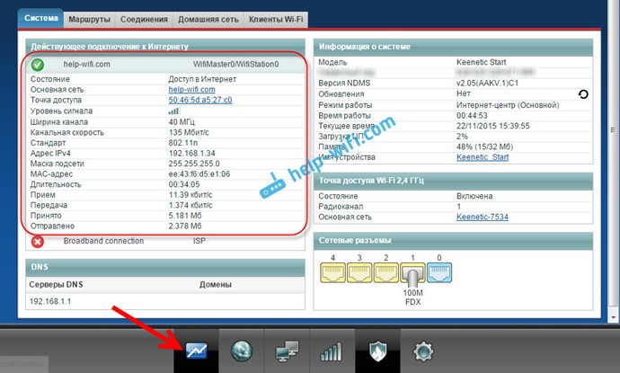